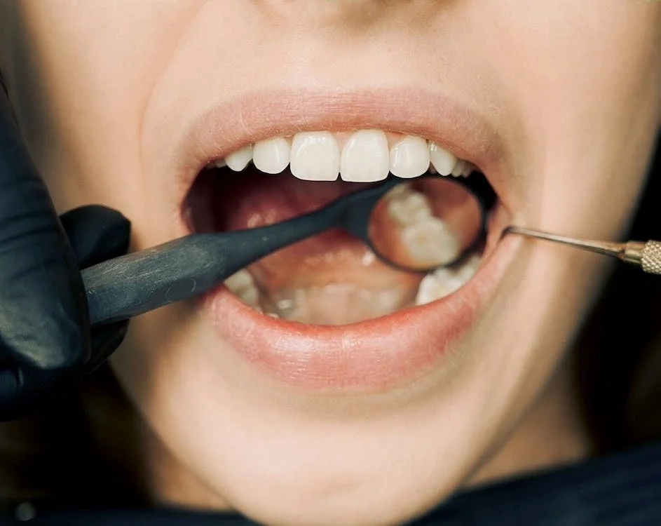
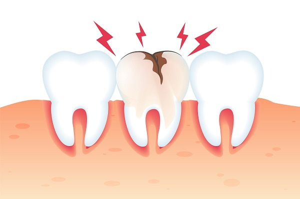

Por que rir é importante?
Dezembro, 27, 2022 Por que o dente doi?
A dor de dente raramente começa insuportável. Na maioria dos casos, ela tem início de forma leve e vai se tornando mais aguda com o passar do tempo. Naturalmente, nem sempre a dor de dente é sintoma de algo sério. Ela pode ser apenas o sinal de uma sensibilidade momentânea. No entanto, em muitos casos, a dor de dente começa a incomodar quando ela alcança a polpa do dente. A polpa do dente, também conhecida como polpa dentária, é a estrutura interna do dente. Ela é formada por um tecido mole e é responsável pela vitalidade do dente.
Por conta disso, trata-se de um tecido composto por células do tecido conjuntivo, fibras, nervos e vasos sanguíneos. Isso a torna uma parte mais sensível da estrutura dentária. Sabemos, então, no que consiste a dor de dente. Mas o que gera esses incômodos na polpa dentária? A seguir, vamos apresentar algumas das principais coisas que podem gerar a dor de dente. Confira!
Sensibilidade dental
A sensibilidade dental pode ser uma grande causa de desconforto. Ela normalmente ocorre quando o esmalte do dente se desgasta, expondo a dentina, uma camada interior mais vulnerável. Esse desgaste dos esmalte dos dentes pode ocorrer por uma variedade de razões. A mais comum é o bruxismo, ou seja, o hábito de ranger os dentes durante o sono. O bruxismo costuma ser um sintoma de ansiedade e estresse.
Cáries
Não dá pra falar de causas da dor de dente sem falar das cáries. Em caso de cárie, as bactérias acumuladas nos dentes começam a desgastá-los, avançando aos poucos. Quando essas bactérias alcançam o nervo, a dor surge. O ideal é tratar cáries logo no início. Isso porque, a longo prazo, esse tipo de problema pode resultar na perda de dentes.